取り扱い商品一覧
 


ブラシ植毛数が世界最多！
虫歯も歯周病も同時に予防できる唯一のブラシ
【商品説明】
・「CURAPROX」はクレーン維持という
特殊な毛の材質なため、
歯と歯ぐきに優しい
極上の磨き心地！
・高密度/超極細毛が隙間なく、歯の汚れを
効率的に落とします。
・撒水が良く長持ちなポリエステルファイバーを使用しているため、
最長3ヶ月お使い頂けます。
予防先進国スウェーデンで使用率が約8割の圧倒的シェア！
台形型のブラシヘッドで奥歯まで隅々キレイに。
【商品説明】
・先端が細かくなっている台形型のヘッドで、
奥歯の隅々までブラシが行き届きます。
・人工工学に基づいたハンドルのデザインで
どなたでも効率的なブラッシングができます。
・北欧ならではのデザイン性の高さや、
環境に優しい素材であることも特徴です。
お家でもプロ級の歯磨きを！ 日本の歯科医推奨率NO.1ブランド
歯科医院でクリーニングしたかの様なツルツル感を実現
【商品説明】
・高速振動✖️幅広い振り幅により起こる
”音波流水”によって歯の隙間の汚れが効率的に落とせる！
・歯に当てるだけ！
手を動かす必要がないので
歯ぐきにも優しくお手入れできます。
・手磨きでは取りづらい汚れも簡単に落ちるので、
約1週間で元のキレイな歯に！
笑顔に自信を！
歯の黄ばみ黒ずみを落とし、輝き続ける白い歯に
【商品説明】
・「ルシェロホワイト」弱アルカリ性！
歯の表面に付着したステインを落としやすくします。
・歯より柔らかくきめ細やかなLime粒子（清掃剤）を配合！
ブラッシングで落としにくい
ステイン（着色）を除去します。
・「ポリエチレングリコール（PEG）400」
タバコの「やに」を溶解助教します。
【成分】
薬用成分：ポリエチレングリコール（PEG）400、
モノフルオロリン酸ナトリウム（フッ素）
湿潤剤：炭酸カルシウム（Lime粒子）
溶剤：精製水
湿潤剤：濃グルセリン
甘味剤：キシリトール
粘結剤：ヒドロキシエチルセルロース
カルボキシメチルセルロースナトリウム
香味剤：香料（ピュアミントタイプ）
ph調整剤：リン酸水素二ナトリウム、水酸化ナトリウム
増粘剤：無水ケイ素
保存剤：パラベン
歯にもトリートメントを！
より健康で、よりキレイな歯に
【商品説明】
・プラーク（歯垢）の元となるミュータンス（むし歯菌）を
吸着除去し、虫歯予防します。
・「アパガードガードリメナル」に配合された
ナノ粒子薬用ハイドロキシアパタイトが
歯の表面についた傷をツルツルにします。
・歯にミネラルを補給し、プラーク（歯垢）やステイン（着色）
がつきにくい歯を作ります。
【成分】
溶剤：精製水
湿潤剤：温グルセリン
薬用成分：薬用ハイドロキシアバタイト、マクロゴール400（PEGー8）、
ゼオライト、ポリピニルビロリドン（PVP）
βーグレチルレチン酸、塩化セチルピリジニウム
甘味剤：キシリトール
基材：無水ケイ素
可溶化剤：ポリオキシエチレン酸ヒマシ油、エタノール
発泡剤：NーラウロイルーLーグルタミン酸ナトリウム
香味剤：香料
安定剤：酸化チタン
保存剤：塩酸アルキルジアミノエチルグリシン
100%天然由来成分の飲み込んでも安心な新感覚歯磨き粉
【商品説明】
・歯磨き粉としてだけでなく、保湿剤としてと使用可能で
ドライマウスによる不快感や口臭対策にピッタリ。
・”梅”と”おから”から作られた天然由来の原料だから
飲み込んでも安心です。
・化学成分のフリーなのにも関わらず、口内トラブルの
様々な原因菌を素早く殺菌！
虫歯、歯周病、ドライマウスのトータルケアができます。
【成分】
保湿剤：グリセリン（バーム伽子由来）
清掃助剤：乳酸球菌培養エキス/ウメ果実エキス
香味剤：ナツミカン花水/セイヨウハッカ油/スペアミント油
増粘剤：キサンタンガム（トウモロコシ由来）
その他：水※研磨剤・発泡剤不使用